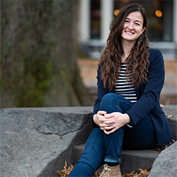

Bio: I’m a postdoctoral research fellow in cognitive
neuroscience
at the
Center for
Sleep and Consciousness at the University
of Wisconsin – Madison. My main area of interest is in the science of consciousness.
My latest research is focused on
sleep as a way to study the neurophysiological basis of the loss and recovery of
different aspects of consciousness.
Research interest: I'm interested in improving methods for
inducing
lucid
dreams
Website: https://www.benjaminbaird.org/

Bio: Born on the 04.01.1975 in Lüneburg,
Germany, married, two daughters.
EDUCATION: 2011 Vienia Docendi in
Psychology (Habilitation), University of Basel, Switzerland2008 Doctor of Science
(Dr. rer. nat., summa cum laude),
University of Trier, Germany2003 Diploma (equivalent to M.Sc.), Psychology,
University of Trier, Germany
PROFESSIONAL
APPOINTMENT: S2013 – present Full professor of Cognitive Biopsychology and Methods
at
the University of Fribourg,
Switzerland2011 - 2013 SNSF Professor of the Swiss National Science Foundation
(SNSF) at the University of Zürich,
Switzerland2008 – 2011 Lecturer and Research Scientist, Division of Cognitive
Neuroscience (Prof. De Quervain) and
Division of Molecular Psychology (Prof. Papassotiropoulos), University of Basel,
Switzerland2003 – 2008 Research
Scientist, Institute for Neuroendocrinology (Prof. Born), University of Lübeck,
Germany
FELLOWSHIPS AND AWARDS: 2015
ERC-Starting Grant2015 Vontobel-Price for research in the elderly, University of
Zurich2011 SNSF professorship of the
Swiss National Science Foundation (SNSF)2008 2-year post-doc scholarship, Deutsche
Forschungsgemeinschaft (DFG)2007
Young Scientist Award (Fachgruppe „Biologische Psychologie und Neuropsychologie“ der
Deutschen Gesellschaft für
Psychologie (DGPs))
Research
interest: Memory
consolidation, sleep, targeted memory reactivation, reactivation and dreaming
Website:
https://www3.unifr.ch/psycho/en/research/biopsy/
Bio: Carlyle Smith, (Ph.D., C. Psych.) is Lifetime Professor
Emeritus of Psychology at Trent University and Director of Trent
University Sleep Research Laboratories (Peterborough, Ontario, Canada). He is an
internationally respected expert on the
topics of sleep, memory and dreams and has taught courses on these subjects for many
years. Dr. Smith was awarded the
Trent University Distinguished Research Award in 2000 and the Canadian Sleep Society
Distinguished Scientist Award in
2009. His latest book – Heads-Up Dreaming, 2014.
Research interest:
I published one
of the very first papers on what is now called targeted memory recall [Smith &
Weeden (1990). Psychiatric
Journal of the University of Ottawa, 15, 85-90.]. I am quite interested in seeing
how this field has
developed into possibly quite useful and practical applications. In particular, I
would like to see if
directed dreaming techniques could be used to enhance heads-up dreams.
Bio: Dr. Leslie Ellis is a psychotherapist in private practice
with particular expertise
in working with dreams, the body and trauma. She has authored many articles, and
chapters in these topics
and has a book on dreamwork forthcoming from Routledge in August 2019. She is Vice
President of the Focusing
Institute and adjunct faculty at Adler University.
Research interest:
I conduct
experiential dreamwork and am always interested in methods that deepen the
experiential intensity for the
dreamer. My interest is in a confluence of clinical dreamwork, embodied/experiential
methods and
neuroscience -- both in research and practice, and with the aim of developing
clinical methods of dreamwork
that create lasting change.
Bio: Elizaveta Solomonova is a Postdoctoral Fellow in the
department of Psychiatry and a
lecturer in the department of Psychology at McGill University. She works in the
Neurophilosophy Lab and is
part of the Culture, Mind and BrainElizaveta has received a B.A. in Art History,
Psychology and Religious
Studies at McGill University (2007), an M.Sc. in Experimental Psychology (2012), and
a Ph.D. in Psychiatry
and Philosophy at the University of Montreal (2018). She has worked for 13 years at
the Dream and Nightmare
Laboratory, Center for Advanced Research in Sleep Medicine. She has completed her
first Postdoctoral
Fellowship (2017-2018) at the Lady Davis Institute for Medical Research, Jewish
General Hospital.
Research interest: Elizaveta's work blends philosophy of mind and
phenomenology with
empirical dream and sleep research. She is particularly interested in the
relationship betweeElizaveta's
graduate research has focused on dreams, stimulus incorporation, sleep architecture,
memory consolidatDuring
her first postdoctoral fellowship at the Lady Davis Institute for Medical Research,
Elizaveta studied the
rHer current research projects at the Neurophilosophy Lab, Culture Mind and Brain
research group, consist of
three main streams: 2) dreams, theory of mind and empathy; and 3) social
determinants of sleep quality.

Bio: I work as an attending physician at the Center for
Investigation and Research on Sleep of the Lausanne University
Hospital in Switzerland. After my neurology residency and specialization in sleep
medicine in Lausanne and Zürich, I
completed a postdoctoral fellowship at the Center for Sleep and Consciousness at the
University of Madison-Wisconsin,
where I investigated the EEG correlates of dreaming using a serial awakening
paradigm and high-density EEG recordings. I
currently direct a research group studying changes in dream consciousness that occur
in sleep disorders (insomnia,
parasomnia), with the aim of better understanding these conditions and exploring
treatment options.
Research interest:
I am interested in finding ways to automatically detect and modulate
dreaming in patients with
dream-related complaints.
Bio: Dr. Mashour is an anesthesiologist and neuroscientist who
leads an NIH-funded
research group focused on the translational neuroscience of consciousness and
unconsciousness. He is the
founding director of the Center for Consciousness Science at the University of
Michigan Medical School.
Research interest: We have explored, in animals and humans, how we
might pharmacologically
"engineer" general anesthesia to be more like sleep, in particular to induce a
REM-like state (active
cortex, higher cholinergic tone, dream-like phenomenology) during what is typically
more of a slow-wave
state (suppressed cortex, lower cholinergic tone, lower probability of
phenomenology).
Bio: I am a PhD student at Northwestern University studying
lucid dreaming and dream
manipulation.
Research interest: My current research focuses
on applying targeted
memory reactivation to dreaming and lucid dreaming studies. Currently, I am working
on improving lucid dream
induction in the lab and two-way communication from a lucid dreamer to an
experimenter.
Bio: Ken’s research focuses on memory, consciousness, and
related issues. He is a Professor of Psychology at Northwestern
University, in Evanston, Illinois, where he also directs the NIH-funded Training
Program in the Neuroscience of Human
Cognition. He received his training at UCLA (BS), UC San Diego (PhD), and as a
postdoc at Yale, Manchester, and
Berkeley. His work using EEG, neuropsychology, and neuroimaging has contributed to
understanding the neural substrates
of human memory. In this work, he has contrasted conscious memory experiences with
various ways in which memory can
influence behavior in the absence of awareness of memory retrieval, as in implicit
social bias, priming, and intuition.
Recent studies from his lab showed that sensory processing during sleep can
reinforce prior learning, providing novel
evidence on sleep’s role in memory. Research papers are available at
http://pallerlab.psych.northwestern.edu/.
Website: http://www.northwestern.edu/people/kap

Bio: Kendra Holt Moore is a Ph.D. student in the Graduate
Program in Religion at Boston
University where she studies psychology of religion. She holds a Bachelor of
Behavioral Sciences from
Hardin-Simmons University and a Master of Theological Studies from Boston
University. Kendra is interested
in using implicit bias research and Terror Management Theory to understand the
formation of the religious
imagination and its influence on human belief and behavior.
Research
interest: See bio
for summary of research interests; my involvement in dream engineering was as the
lead research assistant on
a pilot study for nightmare anxiety, and it was this research project that granted
me incredible experience
in managing a research team and conducting a study with human participants. This
project has sharpened my
own research skills.
Bio: Martin Dresler is principal investigator of the Donders
Sleep & Memory Lab.
Originally trained in biopsychology, philosophy and mathematics, he switched to
cognitive neuroscience for
his PhD and postdoctoral research at the Max Planck Institute of Psychiatry, Oxford
University and Stanford
University before establishing his own lab at the Donders Institute.
Research interest:
Cognitive neuroscience of sleep, dreaming, lucid dreaming.
Website: https://dreslerlab.org
Bio: I'm a psychologist with a particular interest in the
neurocognitive aspects of
sleep and dreaming. During my PhD I examined the neuropsychological functions and
electrophysiological
features of subjects with frequent nightmares (idiopathic nightmare disorder).
Currently, I work with
psychometric tools, behavioral and neuroscientific methods (mainly EEG) to study
different aspects of
chronotype, sleep EEG oscillations and the role of sleep in emotional and cognitive
information processing.
Currently, I am deeply absorbed in the exploration of REM sleep microstates with the
hope to contribute a
little bit to the understanding of this truly paradoxical sleep state. My future aim
is to integrate the
findings of basic sleep research into the clinical field and to use biological
markers to facilitate the
diagnoses and treatment of patients with sleep complaints.
Research
interest: The aim of the Budapest Laboratory of Sleep and Cognition
(led by Péter Simor) is to examine human behavior with a
special focus on sleep and its role in information processing. In our view, sleep
provides an exciting “natural
environment” to explore and unravel the neural activity of the brain as well as its
more specific functions or
dysfunctions. Our research topics extend from basic neurophysiological studies to
more complex experiments focusing also
on the behavioral level. Our aim is to understand sleep and sleep-related cognitive
and affective processes in their
entirety integrating multiple (physiological, cognitive and phenomenological) levels
of analyses.
Website: https://budapestsleeplab.com/
Bio: Robert Stickgold is an associate professor of psychiatry at
Beth Israel Deaconess
Medical Center and Harvard Medical School. He received his B.A from Harvard
University and his Ph.D. from
the University of Wisconsin, Madison, both in biochemistry. He has published over
100 scientific
publications, including papers in Science and Nature. His work looks at the nature
and function of sleep and
dreams from a cognitive neuroscience perspective, with an emphasis on their role in
memory consolidation and
integration, and how defects in these processes contribute to psychiatric disorders,
including PTSD and
schizophrenia. His work is funded NIMH.
Research interest: I
study dreams!!
Website: https://www.sleepandcognition.org/
Bio: Professor Stuart Fogel Professor at uOttawa School of
Psychology Director of sleep neuroscience at Royal’s Institute of
Mental Health Research Member, University of Ottawa Brain and Mind Research
InstituteDr. Stuart Fogel is a cognitive
neuroscientist at the University of Ottawa and Director of sleep neuroscience at the
Royal’s Institute for Mental Health
Research. His research focusses on the function of sleep for learning, memory and
cognition. He helped lead the
discovery that bursts of brain activity during sleep are associated with overnight
enhancement of newly formed memory,
and are an electrophysiological marker of intellectual abilities. He has published
highly cited peer-reviewed papers in
high-impact journals, and has given dozens of talks about his research around the
world where he advocates for the
importance of sleep to support good physical and mental health.
Research interest: Interested in the functions of sleep to support
memory, cognition, intelligence, performance and related dream content.
Website: https://socialsciences.uottawa.ca/sleep-lab/
Bio: For over 30 years, my research in the Dream & Nightmare
Laboratory has concerned
the neuroscience of dreaming and nightmares. I direct a 2-bed sleep laboratory in
the
Montreal Sacre-Coeur
Hospital in which we use a variety of polysomnographic, electrophysiologic and brain
imaging methods to
quantify sleep. We have focused on quantifying the physiological differences between
REM
and NREM dreaming,
on determing the delayed memory sources of dreaming (day-residue and dream-lag
effects),
on characterizing
the neurophysiological basis of nightmares and a variety of other topics. In recent
years, our focus has
been on relationships between dreaming and NREM sleep events, like sleep spindles
and
the possible role of
dreaming in sleep-dependent memory consolidation.
Research interest:
My lab has
studied several neurobiological correlates of dream recall and dream content
including
EEG power,
localization and coherence, sleep macro- and microstructure (e.g., sleep spindles),
SPECT and fMRI brain
imaging, and EMG activity. We have also assessed the effects of external stimuli on
dream content, including
the effects of films and virtual environments. We have assessed the correlates and
memory sources of both
REM/NREM dreams and brief sleep onset images. We have examined the role of dreaming
in
sleep-dependent
memory processes.
Website: https://www.researchgate.net/profile/Tore_Nielsen